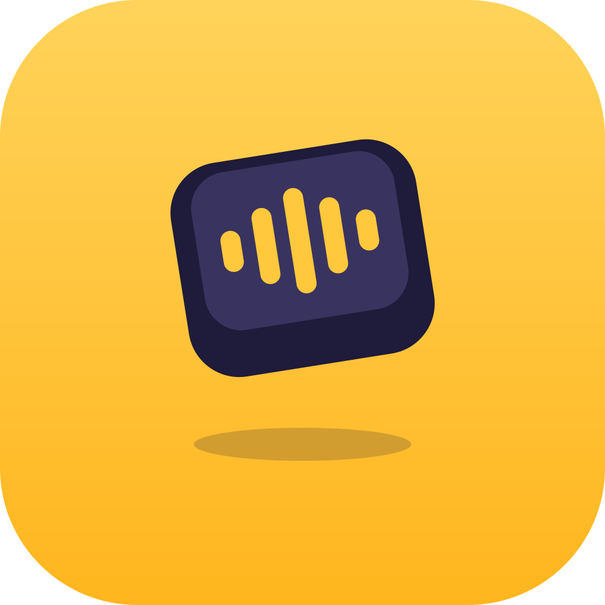

Projects
Two apps and a course. All free and open source.
-

ThumbFree
Voice typing for Android and iPhone that works offline. Speech to text runs on your phone, with no account and no ads.
- Android
- iPhone
- Open source
-
Everest
Rewrite selected text in any Mac app with a keyboard shortcut. The language model runs on your Mac, not in the cloud.
- macOS
- Open source
-
How AI Agents Work
An interactive course on how AI agents work: the loop, tools, context, memory, subagents, safety, and how to design your own.
- Course
- Interactive
- Free